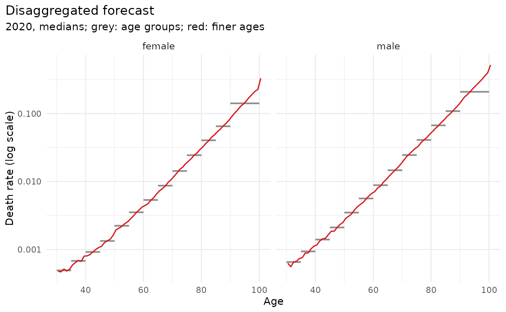

mt_disaggregate_check() compares fine-age draws with the grouped draws
they come from: the largest relative difference between the
exposure-weighted mean of the fine rates and the group rate (0 when the
group totals are kept) and the largest absolute second difference of
the median log rates over age (large values mean kinks or oscillations).
mt_plot_disaggregation() shows, for one forecast year, the group medians
as steps and the fine-age medians as lines (type = "profile"), or the
absolute second differences of the fine log rates by age as a heat map
(type = "smoothness").
Usage
mt_disaggregate_check(grouped, fine, exposure)
mt_plot_disaggregation(
grouped,
fine,
period = NULL,
strata = NULL,
type = c("profile", "smoothness")
)Arguments
- grouped
The mt_draws on age groups.
- fine
The result of
mt_disaggregate()forgrouped.- exposure
The exposures used by
mt_disaggregate().- period
Forecast year shown (default: the first).
- strata
Stratum labels shown (default: all).
- type
"profile"or"smoothness".
Value
mt_disaggregate_check(): a data.table per stratum and period
with max_group_error and max_second_difference.
mt_plot_disaggregation(): a ggplot object.
Examples
x <- mt_example(years = 2000:2019, deaths = "single")
xg <- mt_regroup(x, age = c(seq(30, 85, 5), 90))
fc <- mt_forecast(mt_fit(lee_carter(), xg), h = 3, n_draws = 20, seed = 1)
e <- mt_array(x, "exposure")[, 20, ]
sh <- mt_shape_rates(x, periods = 2020:2022)
fs <- mt_disaggregate(fc, mt_grid(x)$age, exposure = e, shape_rates = sh)
mt_disaggregate_check(fc, fs, e)
#> sex label period max_group_error max_second_difference
#> <char> <char> <num> <num> <num>
#> 1: female female 2020 4.440892e-16 0.3116803
#> 2: female female 2021 4.440892e-16 0.3116803
#> 3: female female 2022 4.440892e-16 0.3116803
#> 4: male male 2020 4.440892e-16 0.2758296
#> 5: male male 2021 3.330669e-16 0.2758296
#> 6: male male 2022 4.440892e-16 0.2758296
if (requireNamespace("ggplot2", quietly = TRUE)) mt_plot_disaggregation(fc, fs)
